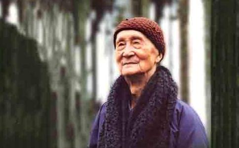

印顺法师 （1906-2005），当代著名高僧，以智慧深广、学识渊博、著述宏富而享誉当今世界。社会评价法师学优行粹，为海内外佛子所同钦。一九六七年中华学术院授印顺法师以该院“哲士”荣衔。一九七三年日本大正大学亦因印顺法师《中国禅宗史》一书之创见，而授予博士学位。印顺法师于年青时，曾追随太虚大师办学。来台后历任善导寺、福严精舍、慧日讲堂、妙云兰若住持及导师，暨福严佛学院、华雨精舍、妙云讲堂导师。并多 次前往国外弘法。数十年来著述研学，不遗余力。撰书数十种，蜚声士林。
印顺法师年谱
印顺法师俗姓张，名鹿芹，浙江省海宁县人，生于清德宗光绪三十二年（公元1906年，岁次丙午）清明前一日。六岁（民前一年）六月，进私塾学习；民国元年（七岁），随父亲至新仓镇，进小学堂就学。民国四年（十岁）冬天，小学毕业，处家中自修半年。民国五年（十一岁）秋天，往硖石镇开智高等小学堂插班二年级进修，在高小第三学年，秀才张仲梧先生曾给导师的作文满分再加二分的赞许。民国七年（十三岁）夏天，完成高等小学堂学业。同年秋天，于邻近之中医师家里读书，直至十六岁夏天。
1921年至 1930年任教于区立教会附设私立小学。此段期间，于民国十四年（二十岁），读冯梦祯的〈庄子序〉：“然则庄文郭注，其佛法之先驱耶”，引起了探究佛法 的动机。此后，于商务印书馆之目录中发现佛书目录，因此购得《中论》等书。由于阅读《中论》，使导师领略到佛法之高深而向往不已！导师经四、五年的阅读思惟，发现了佛法与现实佛教界间的距离，所理解到的佛法与现实佛教界差距太大，引起了内心之严重关切，因此发愿云：“为了佛法的信仰，真理的探求，我愿意出家，到外地去修学。将来修学好了，宣扬纯正的佛法。”
民国十九年（廿五岁）农历十月十一日，于普陀山福泉庵礼上清下念老和尚为师，落发出家，法名印顺，号盛正。出家前因曾受般若精舍老和尚，被太虚大师称誉为“平生第一益友”之昱山上人指引，出家后随顺普陀山之习俗，礼昱公为义师父。
农历十月底，导师至天童寺受戒，戒和尚为上圆下瑛老和尚。受戒后，得其恩师之同意与资助，于民国二十年（二十六岁）二月，至厦门南普陀寺闽南佛学院求法，插入甲班（第二学期）。八月初，受命至鼓山涌泉佛学院教课，在鼓山，礼见了当代的名德──虚云与慈舟二位长老。
1932年（二十七岁）
上学期，导师受大醒法师之命为同班同学讲《十二门论》，数月后，导师心想应该自求充实，因此于初秋之际，往佛顶山慧济寺之阅藏楼阅藏。此一阅藏之处为导师出家以来所怀念为最理想的地方。一年半后，为了阅览三论宗之章疏，于民国二十三年（二十九岁）正月，到武昌佛学院（世界佛学苑图书馆）。在武院半年，读完了三论宗的章疏，之后又继续回到佛顶山阅藏。于佛顶山阅藏足足有三年。
1936年（三十一岁）
武昌佛学院开办研究班，导师受太虚大师之命，至武昌佛学院指导“三论”的研究。民国二十六年（三十二岁）国历七月七日，芦沟桥之抗日炮声响起；国历八月十三日，淞沪战争又起；至国历十二月四日，南京亦宣告失守；至民国二十七年（三十三岁）七月，武汉情势逐渐紧张，导师与老同学止安法师经宜昌而辗转到了重庆，度过了抗战 八年。在四川最初的一年半中（民国二十七年八月到二十八年底），导师于北碚缙云山之汉藏教理院与法尊法师共同修学。其间，导师为法尊法师新译的《密宗道次 第广论》润文，遇到文字不能了解之处便发问，因此对黄教之密乘见解与密乘特质有一番的了解。法尊法师也应导师的请求，翻译了龙树的《七十空性论》。对于龙 树菩萨的空义思想，导师与法尊法师经常作法义的探讨，导师假设问题以引起法尊法师之见解；有时争论不休，最后以“夜深了，睡吧！”而结束。如此的论辩，使导师有了更多与更深的理解，从此不再重视深受老庄影响的中国空宗──三论宗。导师自忆与法尊法师共同修学之因缘云：“我出家以来，对佛法而能给予影响的， 虚大师（文字的）而外，就是法尊法师（讨论的），法尊法师是我修学中的殊胜因缘！”
1940年（三十五岁）
导师至贵阳大觉精舍，于此 撰写完成《唯识学探源》，这是导师撰写出版的第一部著作。民国三十年（三十六岁），为演培、妙钦与文慧三位法师讲《摄大乘论》，听者非常欢喜，因此共同整 理笔记而成《摄大乘论讲记》。民国三十年秋天，演培法师与几位法师至合江法王寺办法王学院，礼请印公担任学院之导师，直至三十三年（三十九岁）夏天，三年圆满。
于四川之八年中，导师几乎从来没有离开病，虽受病所困，却从来没有中断修学。八年中，不断地讲说，不断地写作。导师自云：“病，成了常态，也就不再重视病。法喜与为法的愿力，支持我胜过了奄奄欲息的病态。”
1947年（四十二岁）
正月，导师于杭州武林佛学院得到虚大师逝世的消息，折了几枝灵峰的梅花，与大家一起到上海，奉梅花为最后的供养。法事过后，导师被推举担任《太虚大师全书》主编，全书至第二年四月编集完成。
民国三十七年冬天，性愿老法师在厦门南普陀寺举行传戒法会，导师应邀随喜戒会。在戒期中，为戒子作了几次开示。于戒会授具足戒时，与恩师念公上人，都参加戒坛为尊证。新年过后，民国三十八年（四十四岁）正月，因缘有所变化，导师于是在厦门住了下来。在厦门期间，随缘办了一所“大觉讲社”，并于讲社宣讲了《佛法概论》。六月，因缘再次变化，法舫法师在香港一再地催导师早日到香港来，并为导师安排住处与生活，导师于是与学友一同前往香港避难。在香港的三年中，导 师出版了《佛法概论》、《太虚大师年谱》等十五本书。
1952年（四十七岁）
五月底，中国佛教会决议推请导师代表中华民国出席在日本召开的世界佛教友谊会第二届大会，此一因缘让导师从香港来到了台湾，之后 又有种种因缘让导师从此留在台湾转大法轮。同年，导师接任《海潮音》杂志社社长，使虚大师创办并发行三十多年的《海潮音》杂志，得以重振往日声威。导师担 任社长一职，从民国四十二年到五十四年，前后共十三年。
1953年九月，导师于新竹观音坪创建福严精舍，成立一独立学团。来共住修学 者，有印海、妙峰、隆根、真华、幻生、正宗、修严、通妙等法师。民国四十六年秋，在一同寺成立了“新竹女众佛学院”，导师与演培法师任正、副院长；学院的 教师，由精舍法师们负责；住处及经济生活，由一同寺负责。
1954年（四十九岁）
导师应邀至菲律宾弘法。正月中，曾在信愿寺（七 天）、居士林（三天）说法。圆满后，居士林之施性统、刘梅生居士邀请导师至南岛弘法，在宿务──华侨中学操场的晚上说法（三晚）获得广大的回响。于宿务弘法中，促成慧华与梅生居士共同发起创办普贤学校。
1958年（五十三岁）
夏天，导师为性愿长老讲经祝寿，再度至马尼拉弘法。其间，导师被推举为信愿寺与华藏寺二寺的联合上座（住持）。任二寺联合上座后，促成能仁学校的成立。能仁学校成立以来，由信愿寺全力支持，如今学校规模已由小学进而成立中学。
1959年周宣德、丘汉平居士推动成立大专奖学基金，以引导大专学生接近佛法。导师当时担任中佛会“国际文教”主任委员，时值弘化菲律宾，因此周宣德居士写信征得导师同意后，组成了“国际文教奖学基金会”。
1960年（五十五岁）
秋《成佛之道》出版，这是在导师的写作中，流通量相当大的一部。年底，导师于台北成立慧日讲堂。导师当时有一想法，希望在台北成立慧日讲堂，精舍与讲堂分别用来内修与外弘，两者相辅相成。讲堂之建筑费用，半数得力于妙钦法师及广范法师的热心推动功德。在慧日讲堂的三年多期间，导师开演数部经论，如《宝积经》〈普明菩萨会〉、《往生净土论》、《辨法法性论》等，听众参加踊跃，座无虚席。